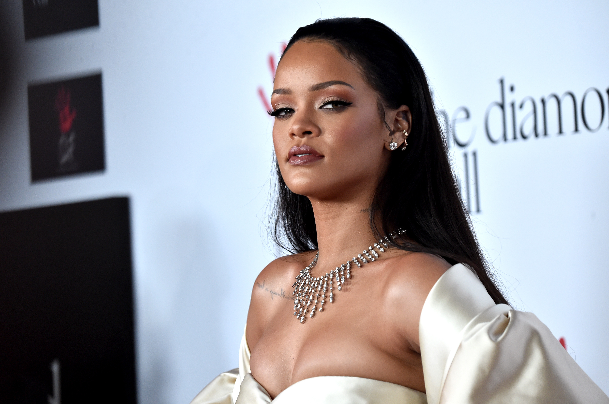
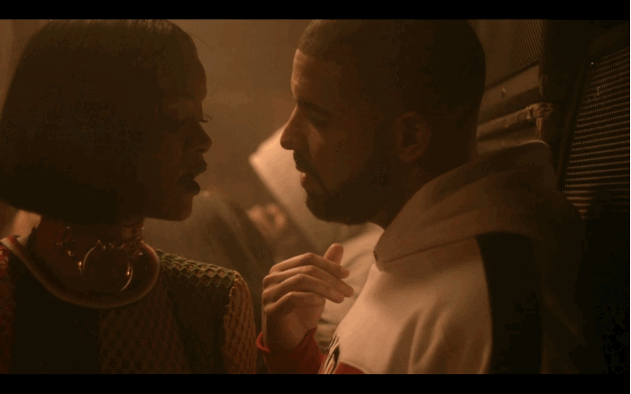
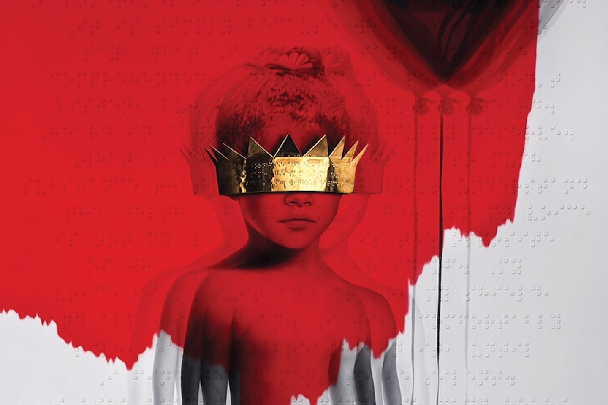
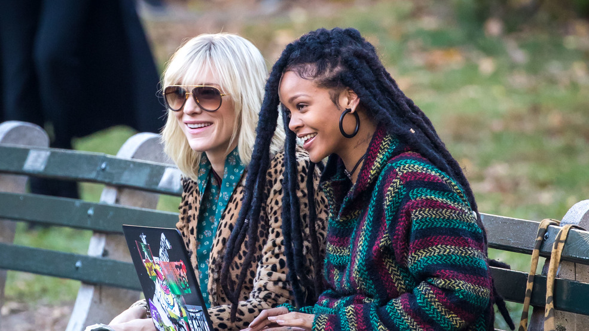

Rihanna has been hailed as a fashion powerhouse and beauty mogul. GIFs of the bad gal offering up an epic side eye through a car window or twerking in a see-through Swarovski gown are among some of Giphy's most popular. She's also praised as a symbol for body positivity thanks to her penchant for proudly showing off her nipples and a "who cares?" attitude amidst criticism of any weight gain.
Yes, RiRi is often given props for her status as a cultural influencer. What sometimes gets lost in the conversation surrounding her, however, is the singer's historic impact on the world of pop music. In addition to all of the above, she's not just a chart-topper — Rihanna is a music icon. Since being discovered by Jay-Z in Barbados in 2005, Robyn "Rihanna" Fenty has racked up nine Grammy Awards, over a dozen American Music Awards, and an MTV Music Video Vanguard Award, to name just a few of her accolades. She's had seven certified platinum albums and released 71 (!) singles, 14 of those hitting number one on the Billboard charts, making her the youngest and fastest solo artist to ever hit that number. In fact, there was a period in her career where Rihanna was releasing a studio album every single year, a habit that only stopped in 2012 when she was finally able to take more artistic control over her distribution schedule.
But perhaps most impressive of all? Rihanna has achieved all of the above before turning 30, a milestone she hits on February 20. And that in itself is something to be celebrated.
Musically, the Barbados-born singer is often criticized, accused of not actually being a talented singer because of her very specific voice, which is not quite standard powerhouse, but more ambient, growling, and breathy at the same time. But that's nothing new to the music industry; just look at everyone from Janet Jackson to Britney Spears. Rihanna's voice might not be the most classically impressive, but it is one of the most versatile of our generation. She can lend vocals to a bass-pumping house hit, a mumbled Caribbean dancehall mix, or a tear-filled, wailing ballad best consumed with a side of whiskey, and it's almost guaranteed to climb the charts. Part of her longevity since she released her first album, "Music Of The Sun," is thanks to that unmistakable voice, multifaceted and adaptable enough to glide as easily through that tropical debut album as it roars over the guitar riffs of Rated R. Chris Martin once famously compared her voice to a "beautifully squeezed tube of toothpaste...this whole, rich thing, solid like a tree trunk." And if you listen closely to the radio, influences of Rihanna's vocal styling can be heard in everyone from Sia to Lorde to any bass-pumping club-house hit featuring a lesser-known female singer.
It was Rihanna, in fact, who started the trend of female vocalists pairing up with house DJ Calvin Harris. The 2011 single "We Found Love" on Rihanna's album Talk That Talk was the DJ's first number one Billboard hit, helping skyrocket him into a household name in America and sparking a slew of other catchy radio hits featuring female vocalists. Harris admitted that the collaboration was "different sounding" for the time, but it worked: He'd later go on to create hit singles with the likes of Ellie Goulding, Florence Welch, Ariana Grande, Katy Perry, and Kehlani. He's also since said that he loves working with female vocalists because their voices are "at the perfect frequency to play in a club." Still, in the U.S., some of the Harris's most successful singles were the ones with Rih, including "Where Have You Been" and "This Is What You Came For." And one of his other chart toppers, "How Deep Is Your Love" — featuring the vocals of Norwegian singer Ina Wroldsen — sounds like the sibling of a Rihanna-Calvin collaboration.
The music industry can also thank the now 30-year-old for bringing island vibes to the mainstream, particularly recently. Several Caribbean-born artists have managed to break onto the charts over the years, from Shaggy to Sean Paul. And every so often, a reggae-tinged song — think Magic!'s "Rude" in 2014 and OMI's "Cheerleader" in 2015 — will explode everywhere as unexpected summertime hits. But since her debut with "Pon de Replay," Rihanna has consistently released projects representing her Bajan roots (including "Rude Boy," "Man Down," "What's My Name"). Her biggest island-infused success, though, was 2016's "Work," which broke the then-record for most streams in one week at 2.056 million. That song also achieved what many before hadn't: Instead of remaining a singular outlier, "Work" made dancehall sounds a mainstay in pop music, in the form of Justin Bieber's "Sorry," Major Lazer's "Lean On," and a resurgence of reggaeton on the American music scene (hello, "Despacito"). And while rapper Drake has credited the Caribbean tunes of his album Views and mixtape More Life to the West Indian communities he grew up around in Toronto, Canada, it's possible those projects may not have found such success had the hits of his rumored ex not preceded them. Would there be a "One Dance" or "Controlla" without "Work?"
Rihanna has also set the stage for Black female artists post-early aughts to be unapologetically carefree with their music, in a way we hadn't seen in the mainstream since Sade and Janet Jackson in the '80s and Lil' Kim, Erykah Badu, and Aaliyah in the 90s. Since she first emerged as a polished product of the music industry, Rihanna slowly blossomed into a woman with swaggering bravado who is equal parts fearless, sexual, and confident. This appeared in yes, her performances; her show at the 2015 iHeart Radio Awards in a Lil' Kim-reminiscent look belting out the lyrics to "Bitch Better Have My Money" is one of her most memorable (and has nearly 69 million views on YouTube).
The messages in her music, though, are what have been the most boundary-pushing. Rihanna has only co-written many of her songs, so she's not necessarily a lyricist. But she hasn't shied away from radical lyrics since her first foray into edgier music with 2009's Rated R, which featured the formerly PG-13-friendly singer delivering songs like "Russian Roulette," "Rockstar 101," and "Te Amo," about a tryst with a female lover. Next was 2010's Loud, which had the Bob Marley-inspired "Man Down" about a fictional murder; 2011's album Talk That Talk included "Cockiness" with the mandate "Suck my cockiness/lick my persuasion/eat my words/and then swallow your pride, down, down." In her lyrics, performances, and music videos, Rihanna has been a champion of swapping the stereotypical gender roles Black female pop stars are often boxed into. That swagger-filled, sex-positive branding only further widened the door previously opened by the likes of Jackson for current artists like Kehlani, who now dips between music genres and often rocks gender-bending clothing, and R&B singer SZA, who's currently burning up the charts with a barely-care aesthetic and raw, honest lyrics.
And then there's Anti. RiRi's eighth studio album was a game changer. After consistently releasing album after album, Anti was deliberate, long-delayed and without any obvious radio hits, a major risk for a star of her status. Instead of following the house pop formula that had birthed some of her most recent smashes, it was instead completely experimental in sound, a kaleidoscopic blend of R&B, rock, and hip-hop, with one song, "Higher," featuring wailing vocals so raw, listeners can never be sure whether to cringe or cry from sadness. The New York Times called it "the record you make when you don't need to sell albums." But its ethos was a relatable soundtrack for women, particularly Black women. With Anti, Rihanna gave her listeners encouragement to be as comfortable flipping their exes the middle finger with "Needed Me" as they are reveling in oral sex (thanks, "Kiss It Better"). It was, surprisingly and unfortunately, snubbed by the Grammys last year, overshadowed by Beyonce's Lemonade — a reminder that the awards show does not offer room for more than one Black woman to shine. Still, Grammys aside, the 13-track, idiosyncratic album was a critical and commercial success; just this week, it broke the record previously held by Katy Perry's Teenage Dream for most number one dance club songs from one album.
There is something to be said, though, about Rihanna's impact on fashion and beauty and the way that therefore intersects with her music. Last year, Vevo released a study that revealed that the looks showcased by stars like Rihanna in music videos — among others, like Beyoncé and Taylor Swift — heavily influences fashion and beauty trends. And for all of her impact on the music industry, Rih is a change making influencer across all industries — a quintuple threat as a music artist, clothing designer, beauty maven, actress, and philanthropist. She's been outspoken about education since being named an ambassador to the Global Partnership for Education last year, helping them raise 2.3 billion dollars earlier this month at the Global Citizen conference in Senegal, a move that will no doubt inspire other artists to become more internationally involved. And in between it all, this June, Rihanna will star in the all-female cast of Ocean's 8, which she somehow managed to film in her spare time.
There is a popular Pinterest quote that's been plastered across mugs and t-shirts and Instagrams millions of times that reads "You have the same 24 hours in a day as Beyoncé." But Rihanna should be an equally motivating tour de force for all of us, a woman who has never been afraid of taking on new adventures, musical experiments, and business ventures — and that was just as a 20-something. So happy 30th birthday to a woman who has already built a historic career on just being herself: fuck-free. I'll always be watching closely to see which piece of Fenty Beauty I need in my cabinet next (right now, more Trophy Wife) or what over-the-top fashion trend I should try next. But above all else, I'm most excited to hear what's next from you. Until then, I'll just keep the eight albums you gifted us before 30 on repeat.